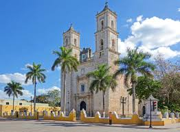
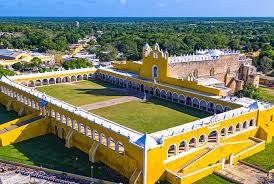

| Chichén Itzá |
Una de las siete maravillas del mundo moderno y una joya arqueológica de la cultura maya. |
 |
| Cenote Ik Kil |
Un cenote majestuoso rodeado de exuberante vegetación y cascadas naturales. |
|
| Mérida |
La capital cultural de Yucatán, conocida por su arquitectura colonial y tradiciones. |
|
| Uxmal |
Un impresionante sitio arqueológico maya, famoso por su arquitectura Puuc. |
 |
| Cenote Suytun |
Un cenote único con una plataforma que parece flotar sobre el agua cristalina. |
|
| Celestún |
Una reserva natural famosa por sus flamencos rosados y paisajes costeros. |
 |
| Valladolid |
Un pintoresco pueblo mágico con calles coloniales y cenotes cercanos. |
 |
| Izamal |
Conocido como la "Ciudad de las Tres Culturas" y famoso por sus edificios amarillos. |
 |
| Playa Progreso |
Una hermosa playa cercana a Mérida, ideal para relajarse y disfrutar del mar. |
|
| Ek Balam |
Un sitio arqueológico con una de las estructuras mayas mejor conservadas. |
 |
| Grutas de Loltún |
Fascinantes cuevas con arte rupestre y formaciones naturales espectaculares. |
|
| Ría Lagartos |
Una reserva natural que alberga una increíble diversidad de fauna, incluyendo flamencos. |
|
| Hacienda Yaxcopoil |
Una hacienda histórica que ofrece una visión del pasado henequenero de Yucatán. |
|